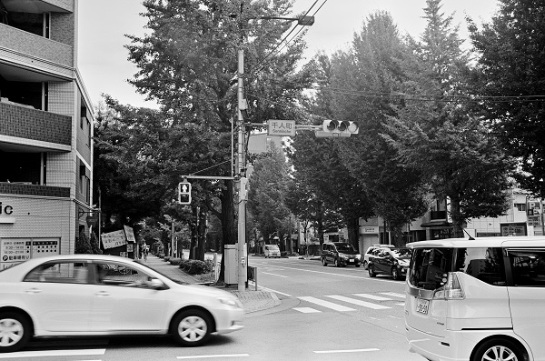

千人同心街道（せんにんどうしんかいどう）は、江戸時代に八王子千人同心が日光勤番のために整備した八王子から日光へ至る、40里（約160km）の脇往還に属する街道である。沿道では日光道などと呼ばれていたが、日光街道と区別するために千人同心街道、日光火の番街道、八王子街道、館林道、日光脇街道などとも呼ばれた。現在でも、埼玉県日高市から鶴ヶ島市にかけての国道407号は「日光街道杉並木」という名称で杉並木が残っている。Wikipediaより
| 年月日 | 出発駅・時間 | 到着駅・時間 | 歩き距離・時間 | 写真ﾌﾞﾛｸﾞ |
|---|---|---|---|---|
| 2016/9/25 | 西八王子駅_9:22 | 箱根ヶ崎駅_14:17 | 20.1Km：4時間54分 | 2016/9 |
| 2016/9/30 | 箱根ヶ崎駅_9:23 | 武蔵高萩駅_14:02 | 19.0Km：4時間39分 | 2016/9,,2016/9,, |
| 2016/10/7 | 武蔵高萩駅_9:29 | 東松山駅_14:51 | 20.9Km：5時間21分 | 2016/10,,2016/10,,2016/10,, |
| 2016/10/10 | 東松山駅_9:07 | 行田市駅_14:16 | 20.2Km：5時間09分 | 2016/10,,2016/10,,2016/10,, |
| 2016/10/14 | 行田市駅_10;42 | 館林駅_15:19 | 19.2Km：4時間37分 | 2016/10...2016/10,, |
| 2016/10/14 | 館林駅_9;55 | 佐野駅_12;45 | 11.4Km：2時間49分 | 2016/10... 完歩... |
千人同心街道 八王子 千人町
